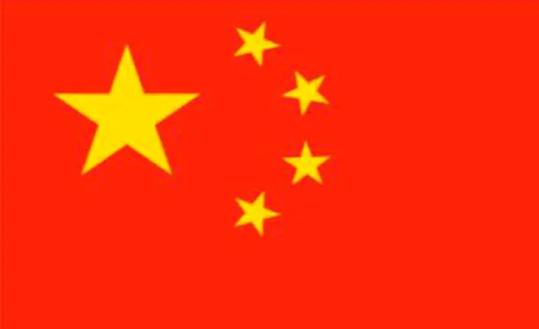
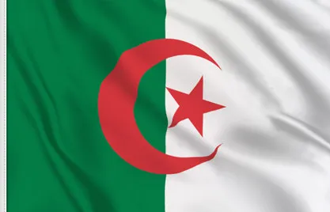

| EUROPA | ASIA | AFRICA | AMERICA | OCEANIA |
|---|---|---|---|---|
| España | Japon | Republica Dominicana del Congo | Nueva York | Australia |
| Rusia | Corea del norte | Angola | Canada | Nueva Zelanda |
| Alemania | Corea del sur | Argelia | Texas | Tonga |
| Reino Unido | China | Benin | Brooklyn | Papua Nueva Guinea |
| Francia | Taiwan | Kenia | Mexico | Samoa |
España
sitúa principalmente en el suroeste de Europa, si bien también tiene presencia en el norte de África.
 españa
españa
Rusia
país que limita con mayor número de países, un total de dieciséis,n. 5 y el que tiene las fronteras más extensas.
rusiaAlemania
fue el primero en hablar de Alamannia en el siglo iv para aludir a una confederación de tribus germánicas
alemaniaReino Unido
soberano e insular ubicado al noroeste de la Europa continental. Su territorio está formado
 reino unido
reino unido
Francia
que se extiende por Europa Occidental y por regiones y territorios de ultramar en América y los océanos Atlántico, Pacífico e Índico.
 francia
francia
ASIA
Japon
es un país insular de Asia Oriental ubicado en el noroeste del océano Pacífico.
japonCorea del Norte
a República Popular Democrática de Corea (RPDC, en coreano: 조선민주주의인민공화국
 corea del norte
corea del norte
Corea del Sur
La República de Corea (en coreano: 대한민국, Daehan Mingukⓘ), comúnmente Corea del Sur es un Estado soberano de Asia Oriental, ubicado en la parte sur de la península de Corea
 corea del sur
corea del sur
China
Es el segundo país más poblado del mundo18 y la primera potencia económica mundial
 chinaTaiwan
La isla de Taiwán (en chino tradicional, 台灣/臺灣; en chino simplificado, 台湾; pinyin, Táiwān), también conocida como Formosa
taiwanAFRICA
Republica Dominicana del Congo
Congo del Oeste, es un país de África Central
 congo
congo
Angola
Angola, cuyo nombre oficial es República de Angola (en portugués, República de Angola), es un país ubicado al sur de África
angolaArgelia
República Argelina Democrática y Popular, es uno de los cincuenta y cuatro países que forman el continente africano.
 argeliaBenín
es un país ubicado en el oeste de África. Está limitado por Togo al oeste, por Nigeria al este y por Burkina Faso y Níger al norte.
beninKenia
es un país del este africano, que tiene fronteras con Etiopía al norte, Somalia al este, Tanzania al sur, Uganda al oeste y Sudán del Sur
 kenia
kenia
AMERICA
Nueva York
es la ciudad más poblada de los Estados Unidos y una de las más pobladas del mundo, con un área urbana
 nueva york
nueva york
Canada
es un país soberano ubicado en América del Norte, cuya forma de gobierno es la monarquía parlamentaria federal. Su territorio está organizado en diez provincias y tres territorios.
 canada
canada
Texas
forman los Estados Unidos. Su capital es Austin y su ciudad más poblada, Houston. Está ubicado en la región Sur del país, división
texasBrooklyn
uno de los cinco distritos o boroughs que conforman la ciudad de Nueva York. Ubicado en el extremo oeste de la isla Long Island, fue una ciudad independiente hasta su incorporación
brooklyn
Mexico
cuyo nombre oficial es Estados Unidos Mexicanos, es un país soberano ubicado en la parte meridional de América del Norte; su capital y ciudad más poblada es la Ciudad de México.
mexicoOCEANIA
Australia
es un país soberano que comprende la parte continental del continente australiano o Sahul, la isla de Tasmania y numerosas islas menores.
 austria
austria
Nueva zelanda
es un país soberano e insular ubicado en Oceanía, localizado en el suroeste del océano Pacífico, cerca de Australia y constituido en una monarquía parlamentaria.
 nueva zelanda
nueva zelanda
Tonga
es un país de Oceanía integrado dentro de la Polinesia y constituido como una monarquía parlamentaria. A través de su territorio marítimo, limita al norte con la colectividad
 tonga
tonga
Papúa Nueva Guinea
Papúa Nueva Guinea, oficialmente denominado Estado Independiente de Papúa Nueva Guinea es un país soberano de Oceanía que ocupa la mitad oriental
 papua nueva guinea
Samoa
papua nueva guinea
Samoa
es un país insular de Oceanía integrado dentro de la Polinesia. Su capital y ciudad más poblada
 samoa
samoa